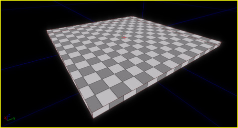
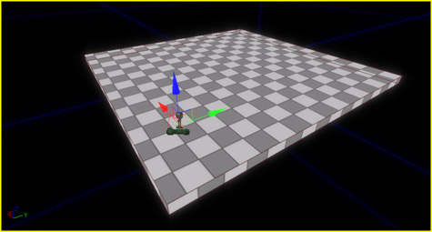
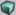

UDN
Search public documentation:
CreatingLevelsCH
English Translation
日本語訳
한국어
Interested in the Unreal Engine?
Visit the Unreal Technology site.
Looking for jobs and company info?
Check out the Epic games site.
Questions about support via UDN?
Contact the UDN Staff
日本語訳
한국어
Interested in the Unreal Engine?
Visit the Unreal Technology site.
Looking for jobs and company info?
Check out the Epic games site.
Questions about support via UDN?
Contact the UDN Staff
创建关卡
概述
入门指南
关卡基础
BSP
BSP组成了世界的外壳。它是引擎的 可见性/网络子系统 的主要遮挡体，并且组成了您关卡中大多数较大的几何体块。要想向世界中添加BSP几何体，您需要使用Builder Brush(构建画刷)(红色的那个)。要想添加一个基本的立方体到世界中，可以通过以下方式实现：- 右击 Cube(立方体) 画刷构建器按钮。https://udn.epicgames.com/pub/Three/CreatingLevelsCH/cal1.jpg
- 输入以下 Properties(属性) 值: X=1024,Y=1024,Z=32.
- 点击 Properties(属性) Build(构建)按钮来更新改变。
- 点击 Add Brush(添加画刷) 按钮。https://udn.epicgames.com/pub/Three/CreatingLevelsCH/cal2.jpg

关于BSP画刷属性和操作的更详细的解释，请参照使用BSP画刷页面。关于对BSP几何体的更多控制，请参照几何体模式指南页面。光源
在此时播放关卡从某种程度上说是没有意义的，因为您还不能看到任何东西。所以需要添加光源。 右击BSP表面大致的中心位置并从 Add Actor(添加 Actor) 子菜单中选择 Add Light(添加光源菜单项) 。使用控件，把光源向上拖拽一点，以便它可以更好地覆盖区域。把视口切换到支持光照的视图模式，您应该看到类似于以下的情形： 这种方法添加了一个点光源。要想添加其它类型的光源，请打开 通用浏览器 ，切换到Actor标签，它显示了各种Actor类别，然后打开Light(光源)部分并从中选择您想使用的光源类别。当您像之前那样右击关卡时，将会出现一个添加选中的光源到那个位置的选项。
请参照光照参考和Lightmass页面来获得关于光照的更多信息。
这种方法添加了一个点光源。要想添加其它类型的光源，请打开 通用浏览器 ，切换到Actor标签，它显示了各种Actor类别，然后打开Light(光源)部分并从中选择您想使用的光源类别。当您像之前那样右击关卡时，将会出现一个添加选中的光源到那个位置的选项。
请参照光照参考和Lightmass页面来获得关于光照的更多信息。
Player Starts
当关卡加载时我们需要告诉游戏玩家从那里开始，所以右击bsp表面的任何地方并从 Add Actor(添加Actor) 子菜单中选择 PlayerStart 菜单项。这时您将会看到类似于以下的情形：
播放关卡
在您在关卡中到处奔跑来查看你所创建的东西之前，请通过点击工具条上的 Build Geometry(构建几何体) (
) 按钮来构建关卡。 一旦构建了几何体，您可以或者选择在编辑器中播放 (PIE)或者选择Play From Here(从这里播放)功能来播放游戏。 可以通过按下ESCAPE键来关闭游戏窗口并返回到编辑器。Play In Editor(在编辑器中播放)
点击 Play This Level(播放这个关卡) 按钮 .
这将会将在关卡，并且您将从Player Start的位置开始跑动。
.
这将会将在关卡，并且您将从Player Start的位置开始跑动。
Play From Here(从这里开始播放)
当您操作关卡时，需要把关卡扩大到从您开始跑动的位置到您想测试的区域是不可避免的，这会造成很多麻烦。如果您想从关卡中的任何地方开始播放游戏，仅需右击您关卡的地面并选择菜单项 Play From Here(从这里播放) 。这将会正常地在游戏中加载关卡，但是您的起始位置是您鼠标点击的位置。其它的几何体
Player Containment(玩家遏制区域)
您或许已经注意到当您玩那种您可以越过BSP边缘的关卡时，并会陷入到空旷的区域。引擎不会试图限制玩家在关卡中的移动，所以关于玩家的移动限制由您来决定。您可以简单地通过使用更多的BSP来阻止玩家进入到空旷的区域。比如，让我们创建一个墙体来看这是如何实现的：- 右击 Cube(立方体) 画刷构建器按钮。https://udn.epicgames.com/pub/Three/CreatingLevelsCH/cal1.jpg
- 输入以下 Properties(属性) 值: X=1024,Y=32,Z=256.
- 点击 Properties(属性) Build(构建)按钮来更新改变。
- 点击 Add Brush(添加画刷) 按钮。https://udn.epicgames.com/pub/Three/CreatingLevelsCH/cal2.jpg
 如果您播放关卡，您会发现这个新的墙体在您的运行轨迹中使您停止。如果您正确地包围您的房间和区域，玩家将永远不再会进入到空旷区域。
如果您播放关卡，您会发现这个新的墙体在您的运行轨迹中使您停止。如果您正确地包围您的房间和区域，玩家将永远不再会进入到空旷区域。
窗、门以及陷阱
虚幻引擎支持除了添加以外的其它BSP操作-比如挖空。现在我们在地面上制作一个洞。- 右击 Cube(立方体) 画刷构建器按钮。https://udn.epicgames.com/pub/Three/CreatingLevelsCH/cal1.jpg
- 输入以下 Properties(属性) 值: X=256,Y=256,Z=512.
- 点击 Properties(属性) Build(构建)按钮来更新改变。
- 点击 Subtract Brush(挖空型画刷按钮) 按钮。https://udn.epicgames.com/pub/Three/CreatingLevelsCH/cal14.jpg
 如果您现在播放关卡，您将会看到那个墙体将会阻止您穿过它，但是您会调入到地面上的洞里。同样的原理可以应用到您想创建的其它东西上：窗口、门等 。
如果您现在播放关卡，您将会看到那个墙体将会阻止您穿过它，但是您会调入到地面上的洞里。同样的原理可以应用到您想创建的其它东西上：窗口、门等 。
Sky Domes(穹顶)
虚幻引擎3关卡中的天空可以通过在一个非常大的放置在世界上方的圆顶内部上应用天空材质来创建。一般材质有一组云贴图，材质的边缘和世界雾相混合，云贴图和材质边缘的雾颜色相混合。一个具有少量材质的自发光蒙板用作为的太阳。材质中贴图的布局依赖于圆顶网格物体的UV映射，有些是平铺映射的，有些事球状地映射的。把这些材质应用到圆顶上，然后把圆顶放置到世界中，将其缩放到非常大的尺寸。这可以减轻视差的感觉。Working Off The Origin(清理原点)
简单地说，我们根本就没有移动构建画刷。当然，您可以随便地移动它，您也可以根据需要使用同一个构建画刷来 添加/挖空 任何数量的画刷。请尝试这样做。选择构建画刷并使用控件到处地拖拽、旋转它等等，并将其和一些新的画刷进行叠加或挖空操作。一旦您已经熟悉了编辑器中的这些工具和操作，您便可以通过很小的努力便可以得到一些非常好看的图形。比如，这个场景完全是使用BSP创建的： 当然，当您开始应用类似于光照颜色、不同的材质及静态网格物体等装饰物时，它看上去将会更漂亮。
当然，当您开始应用类似于光照颜色、不同的材质及静态网格物体等装饰物时，它看上去将会更漂亮。
Light Colors(光源颜色)
好吧，现在我们回到我们最原始的关卡，我们把光源的颜色改为漂亮的橘黄色。在视口中双击光源将会弹出那个actor的属性窗口(或者 按下 F4 )。打开 Light(光源) 类别，然后打开 LightComponent(光源组件) ，最后点击 Color(颜色) 即可。 点击这里的放大镜按钮，您将会获得标准的颜色选择器对话框窗口。选择橘黄色并点击 OK(确定) 。那么场景将会变为以下的情形：
点击这里的放大镜按钮，您将会获得标准的颜色选择器对话框窗口。选择橘黄色并点击 OK(确定) 。那么场景将会变为以下的情形：

材质
在BSP表面上应用材质是非常简单的，您只要选择您想应用材质的表面然后在通用浏览器中点击材质即可。材质将会自动地应用到所有选中的表面上。这里我打开其中一个贴图包并迅速地应用某些材质到我们的BSP表面上： 关于材质的更多信息，请参照材质指南页面。
关于材质的更多信息，请参照材质指南页面。
静态网格物体
静态网格物体是快速地向关卡中添加细节的一种很好的方式，您根本不需要手动地构建它。静态网格物体是一个很大的主题，以至于我们在这篇文章中不能完全地覆盖关于它的内容，但是我们在这里介绍了一些基本内容。要想把一个静态网格物体添加到您的关卡中，您首先需要在通用浏览器中选择他。然后右击您关卡中的某个位置，然后从 Add Actor(添加Actor) 子菜单中选择 Add StaticMesh(添加静态网格物体) 菜单项即可。 这样您便可以把那个静态网格物体添加到您的关卡中。然后您可以拖拽它、旋转它以及把它放置到您希望的位置。我已经添加了几个静态网格物体到我们的关卡中( 并且把光源的颜色改回为白色，以便更容易地看清 )。 正如您看到的，它们和BSP一样被照亮，而且事实上您不能分辨出它们和BSP表面的区别。静态网格物体是一种通过最小的努力添加关卡细节的较好的方法。
关于静态网格物体的更多信息，请参照静态网格物体指南页面。
正如您看到的，它们和BSP一样被照亮，而且事实上您不能分辨出它们和BSP表面的区别。静态网格物体是一种通过最小的努力添加关卡细节的较好的方法。
关于静态网格物体的更多信息，请参照静态网格物体指南页面。
地形
第一步是创建地形。在通用浏览器的 Actor 标签内， 选择 Info 下面的*Terrain(地形)* Actor。右击世界并选择 Add Terrain Here(在这里添加地形) 。右击新添加的地形Actor并选择 Properties(属性) (或按下 F4 )。在 Terrain(地形) 部分下，把 NumPatchesX 和 NumPatchesY 的值都改为 4 。 在3D视口中，直到放置光源之前，地形将是黑色的。在 Generic Browser(通用浏览器) 的 Actor 标签下，选择 Light(光源) 下的 Directional Light(定向光源) Actor。右击世界并选择 Add Directional Light Here(在这里添加定向光源) 。然后根据需要调整光源位置及旋转光源。 对于地形，您至少需要一个层。右击新添加的地形Actor并选择 Properties(属性) (或按下 F4 )。在 Terrain(地形) 部分下，点击 Layers(层) 属性附近的 Add New Item(添加新项) 按钮。新的地形图层设置需要被输入到新创建的图层的 Setup(设置) 属性中。在通用浏览器的 Generic 标签下，使用 Terrain Layer(地形层) 来过滤资源类型。选择想使用地形层，并且在地形层的设置属性中选择 Use Current(使用当前的层) 。 这时，您可以进入到地形编辑模式，通过描画地形表面调整地形高度值来操作地形。 关于地形的相关信息，请参照设立地形 和 使用地形页面。发射器和粒子特效
声效
关于您可以在关卡中使用的不同类型的环境声音的解释，请参照声效Actors?导航AI
关于设置Pathnodes和使用AI路径的更多信息，请参照Navigation AI页面。---+++关卡动态载入关卡动态载入
请参照关卡动态载入指南来获得关于建立持久关卡和多个动态载入关卡的更多新。关卡优化
请参照关卡优化指南来是您的关卡获得更好的性能，请参照地图错误页面获得每个警告的解释。来自Epic关卡设计人员的建议
一些技巧...或许这些技巧对于有经验的关卡设计人员来说是显而易见的；但是对于初学者来说这些可能是有用的:
|
| 一但您的人员已经掌握了基本的BSP构建和关卡基础，我推荐您立即让它们转向到脚本方面。对于那些以前没有编过程序或写过脚本的人来说，这是一个令人兴奋地事情；同时对于那些迫切地想使它们的设计目标显现屏幕上的人来说，这是一个具有创造性的宝藏。找一个具有一些触发器、动态光源的基本空的关卡外形，然后让他们去添加并设计开关、门、actor工厂、附加物体等等….这样他们无时无刻不在具有主动性地积极地实现着它们自己的设计思想。 那也就是说，学习设计基本得体的形象的网格是使它们获得工作的主要原因。然而糟糕但却是事实的是，关卡设计人员的员工雇佣情况是10个人中有9个人的形象的设计都胜过它们的脚本书写经验。 让工作人员尽早地通过使用每个事件来给提供玩家反馈。每个人都需要知道如何触发一个基本的屏幕晃动、产生粒子特效以及播放声音。如果他们花费一个小时的时间来制作一些建筑物倒塌、构建掩体或者其它东西，请务必再花费5分钟的事件添加这3个东西，使那个事件成为可信的“体验”，即使它们是预留位置。仿制一次和大怪boss的战斗？ 如果他没有做出任何反应，那么是别人对它感兴趣的机会便是零。输出“大火球来了”到日志中不会对玩家有什么反应，去尝试吧。 有点偏离主题，但是我所见过的每个在校大学生的关卡都把玩家反馈作为最后的可选项来进行润色，但是实际上，这确是让玩家脸上产生微笑的核心东西。我希望教师把反馈的重要性深深地印在他们的脑子里。如果他们要想使基本的玩家交互感真实并有趣，那么他们不能简单地在不考虑参数的情况下纵容他们的幻想，也不能允许他们在过渡极端的设计中漫无目的地徘徊。 我知道那会反抗很多人的想法，即在学生走出校门之前，他们应该抓住这种非真正商业或没有产品限制的机会来发挥想象…但是我认为具有好的反馈和真实交互的简单设计远比他们占用时间来制作Derek Smart 大的作品好的多。 对我们来说，预制是一些实例收藏，每个预制将会附加改变，以便当您更新预制时，它不会忘记您对一个单独的预制所做的任何修改。所以您可以是在当红色的光源在它的上方时构建一个预制门，把它放置在各处；把一个预制光源改为绿色，稍后您可以调整用在所有门上的红色的阴影并且更新主要的预制，所有红色的光源将会更新为新的阴影，但是因为您已经改变了一个预制实例来显示绿色光源，那么即使所有其它的实例都已经更新了那个实例将仍然是绿色。 所以基本上来讲，它们是实例，但是它们可以记住您对任何特定实例所做的改变，以便当新的改变进行向下传递时不会影响您的个别的改变。 |
| 贴图图集仅是对具有小贴图的分布在关卡各处的网格物体来说是个胜利。对于正常的网格物体，我们仍然每个物体使用单独的贴图(或者，一组贴图，如果您查看法线、漫反射…)。类似于地面上的残骸、标记以及所有小的东西都可以进行图集集合，因为它经常需要动态地载入来在关卡中进行应用。 |
| 首先请确保您完全地使用BSP来构建您地图的外壳。不要添加任何网格物体以及进行光照修补。仅需要在地图中放置大量的点光源并保持它使用简单的BSP来构成原型。如果地图在明亮多变的BSP下是有趣的，那么当您使它变得漂亮时它将变得更加的有趣。 这是非常重要的。我们稍微地进行一些扩展： 把游戏性、脚本、视觉效果作为单独的处理层次来安排。这听起来是很显然易见的，但是在过去我所做的很多项目中都没有这样做，并且也尝到了苦果。如果一个设计人员的任务是同时处理视觉效果、游戏性/脚本，那么通常在某处这些事情其中的一件的效果将较差。通常是它的游戏性。在早期，那是非常普通的撞击一个在代码中等待的障碍物或者来自网络上的资源以及燃烧一周“重新整理家具”，而不是解决游戏性问题或者对脚本进行修改。如果这些人物是独立安排的，即使是同一个人完成其中的两件事，您便可以保证视觉效果和游戏性/脚本都能好的它们应该获得的最好尝试。UE3中的Kismet和Matinee使得这个工作变得更加容易，因为您可以在项目早期安排几乎是最终的脚本，设计人员可以必须要程序员的情况下制作或者设计出关于任何东西的原型。 |